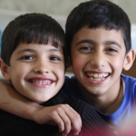
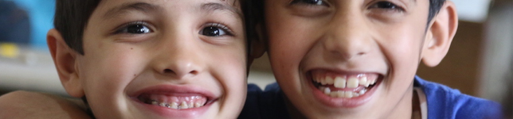
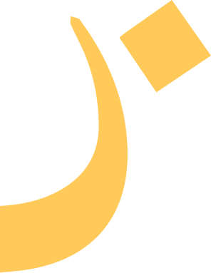
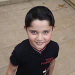
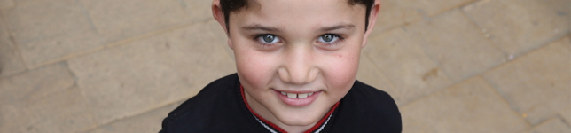
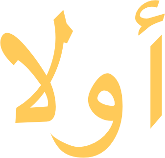
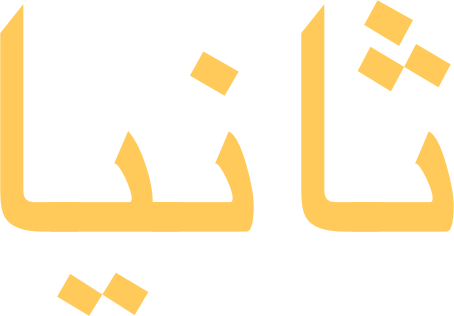

Notre fonctionnement
Yalla ! est dirigée par un Bureau composé de quatre membres, qui rendent compte des actions de Yalla ! aux adhérents de l’association à travers des rapports d’activités concernant chaque projet et lors des Assemblées générales tenues une fois par an à Paris.
Les bénévoles de Yalla ! à Paris et sur le terrain ont préalablement adopté les valeurs de l’association et agissent conformément à ses principes. Ils rapportent leurs activités de façon régulière au Bureau qui contrôle la conformité des actions développées sur le terrain à la mission et aux valeurs que s’est données Yalla !..
La tenue des comptes de l’association et celles des structures créées sur le terrain est assurée par un comptable qui effectue un rapport financier à la fin de chaque projet et de chaque exercice comptable.



Notre stratégie
Intégration des bénéficiaires et de la communauté d’accueil à tous les stades de développement du projet, afin de garantir une compréhension mutuelle des enjeux et objectifs du projet, et contribuer au succès de la mission
Respect de la coordination de l’aide humanitaire menée par les agences humanitaires des Nations Unies, afin de s’intégrer dans une action globale et parvenir ensemble à plus d’efficacité pour répondre aux besoins les plus prégnants
Création d’un lien dynamique entre les donateurs et les bénéficiaires afin de créer une solidarité de proximité et garantir une visibilité sur la destination et l’impact des dons quels que soient leurs montants, tout en faisant parvenir aux bénéficiaires un message de soutien concret de la part de la société civile solidaire
Nos actions
Création de centres d’éducation informelle de qualité à destination d’enfants syriens réfugiés
Plaidoyer auprès des autorités libanaises locales et gouvernementales pour l’intégration des enfants syriens au sein du système scolaire libanais, après remise à niveau par Yalla !
Organisation d’activités sportives et artistiques à destination d’enfants libanais et syriens dans le cadre du dialogue intercommunautaire porté par Yalla!



Nos objectifs
Garantir le droit à l’éducation et au développement de l’enfant
- Permettre le développement de l’enfant dans un environnement sécurisé et adapté afin qu’il retrouve confiance en lui et panse ses blessures liées à l’exil et au conflit
- Remettre l’enfant à niveau et le réhabituer au rythme scolaire
- Intégrer l’enfant au sein du système scolaire classique afin qu’il puisse obtenir un diplôme et lui donner toutes les chances de succès dans sa vie future
Ainsi, l’enfant se réalise en tant qu’individu et s’intègre à la société dans laquelle il évolue.
Développer des mécanisme de construction de la paix
- Des bénévoles syriens et des libanais de toutes confessions, ethnies et origines socio-économiques travaillent ensemble autour d’un projet fédérateur et apprennent à se connaître dans un environnement positif, où priment l’égalité et le respect mutuel
- Enfants syriens et libanais de toutes origines se découvrent autour d’activités ludiques.
Pour que les relations entre les diverses communautés soient pacifiées.
Notre budget
Yalla! est financé par quatre sources distinctes répartis ensuite dans quatres axes.
Les fonds propre de Yalla nous parviennent via les dons, les adhesions ainsi que les évènements ponctuels tel que des concerts ou la vente de photographies!
Yalla ! lance aussi des opérations de crowdfunding sur des pages tels que W4 ou sur Lilo.
Les fondations Casino et Total envoient des subvention privées à Yalla! Pour les enfants. Certaines subventions parviennent également grâce au soutien financier du CCFD, de la Direction Générale de la Mondialisation et du Centre de Crise du Ministère de l'Europe et des Affaires Étrangères et de l'Ambassade de France pour la Méditerranée (DIMED)
Les sommes rassemblées se répartissent en quatre axes:
73,5% en projet éducatif
14,6% en dépense de fonctionnement
9,9% en peacebuilding
2% pour Teach Me Mommy